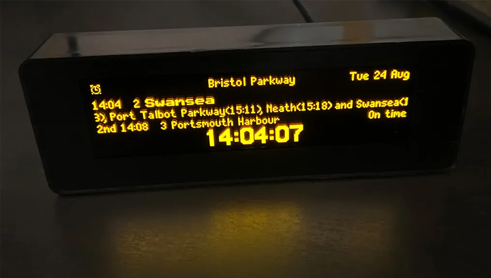

Miniaturowa tablica informacji pasażerskiej

Tematem projektu „Miniaturowa tablica informacji pasażerskiej” jest przygotowanie kompaktowego wyświetlacza o przekątnej 3-5’’ z mikrokontrolerem wraz z oprogramowania systemu. W założeniu urządzenie będzie wyświetlało na żywo odjazdy wybranych stacji kolejowych/metra/autobusowych/tramwajowych na własnej, konfigurowalnej miniaturowej tablicy odjazdów. Urządzenie będzie pobierało dane bezprzewodowo poprzez sieć WiFi. W wyniku realizacji projektu powstanie idealny gadżet do domu lub biura jak i fantastyczny prezent dla wszystkich entuzjastów kolei. Przedstawiane będą rozkłady jazdy pociągów lub komunikacji miejskiej na żywo w czasie rzeczywistym zgodnym z realnym przystankiem. Ilość i rodzaj dostępnych informacji zależą od dostępności serwisów API dostarczających dane w trybie on-line.
- Zaprojektowany, aby z niezwykłą szczegółowością symulować prawdziwe tablice odjazdów stacji
- Ultra płynna animacja tekstu.
- Podgląd odjazdów pociągów / metra / autobusów / tramwajów w czasie rzeczywistym dla wybranych stacji / przystanków
- Informacje o dodatkowych usługach pociągów / metra / autobusów / tramwajów na żywo z rzeczywistych kanałów informacyjnych
- Wiele opcji i pełna konfigurowalność za pomocą aplikacji internetowej oraz mobilnej
- Aktualizacja oprogramowania on-line
- Opcje oszczędzania energii
- Łatwa konfiguracja bezprzewodowa
- Mały kompaktowy rozmiar, niska moc, Micro USB
- Wbudowany głośnik do komunikatów dźwiękowych
- Możliwe wprowadzenie płatnych subskrypcji
Harmonogram pracy
Spotkania
- Spotkania na uczelni 1,5/mies
- Spotkania online 1/tydz (Teams)
Plan pracy
(TO DO)
Nasz zespół
- Prowadzący: Edmund Bejgier
- Rafał Rogala
- Dariusz Cichocki
- Wiktor Krzyczkowski
- Witold Weiner
- Radosław Lach
Lista spotkań
- 16.11.22 Pierwsze spotkanie. Zapoznaliśmy się z koncepcją projektu oraz ustaliliśmy w jaki sposób i kiedy będziemy odbywali kolejne spotkania.
- 25.11.22 Spotkanie